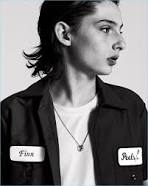
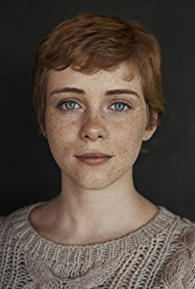
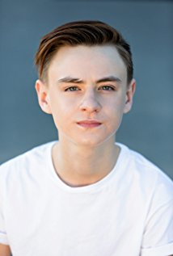

Filming
Production designer Mara LePere-Schloop went to Bangor, Maine, to scope out locations, including the Thomas Hill Standpipe, the land running alongside the Kenduskeag Stream that in It is called The Barrens, and the Waterworks on the Penobscot River. LePere-Schloop said that they were hoping to shoot some scenes in the city, and possibly take some aerial shots. On May 31, 2016, Third Act Productions was confirmed to have applied to film interior and exterior scenes for It in the municipality of Port Hope, with filming slated for various locations around the municipality from July 11, 2016 to July 18, 2016. Principal photography begun in Toronto, with an original shooting schedule from June 27 to September 6, 2016.
Sequels
On February 16, 2016, producer Roy Lee, in an interview with Collider.com, mentioned the final film of the planned It duology, remarking that: "[Dauberman] wrote the most recent draft working with [Muschietti], so it's being envisioned as two movies." On July 19, 2017, Muschietti revealed that the plan is to get production underway for the sequel to It next spring, adding, "We'll probably have a script for the second part in January [2018]. Ideally, we would start prep in March. Part one is only about the kids. Part two is about these characters 30 years later as adults, with flashbacks to 1989 when they were kids."On July 21, 2017, Muschietti spoke of looking forward to having a dialogue in the second film that does not exist within the first, stating, "... it seems like we're going to do it. It's the second half, it's not a sequel. It's the second half and it's very connected to the first one."
Design
On August 16, 2016, in an interview with Entertainment Weekly, costume designer Janie Bryant spoke of crafting Pennywise's form-fitting suit and the inspirations it drew from – involving a number of eras – among them Medieval, Renaissance, Elizabethan, and Victorian.Bryant explained that the costume incorporates all these otherworldly past lives, highlighting the point that Pennywise is a clown from a different time.In designing Pennywise's costume, Bryant included a Fortuny pleating, which gives the costume an almost crepe-like effect,to which Bryant remarked, "It's a different technique than what the Elizabethans would do. It's more organic, it's more sheer. It has a whimsical, floppy quality to it.
Visual effects
Nicholas Brooks was the overall visual effects supervisor, and visual effects company Rodeo FX worked on most of the visual effects on It.Amalgamated Dynamics worked on the special makeup effects.
Storyline
Seven young outcasts in Derry, Maine, are about to face their worst nightmare -- an ancient, shape-shifting evil that emerges
from the sewer every 27 years to prey on the town's children. Banding together over the course of one horrifying summer, the
friends must overcome their own personal fears to battle the murderous, bloodthirsty clown known as Pennywise.
Cast
-
Bill Skarsgård
-

Finn Wolfhard
-

Sophia Lillis
-

Jaeden Lieberher
Box Office
It has grossed $327.5 million in the United States and Canada, and $372.7 million in other territories, for a worldwide total of $700.2 million, against a production budget of $35 million.
In North America, initial opening weekend projections had the film grossing $50–60 million. By the week of its release, estimates were raised to $60–70 million, with a chance to go higher if word of mouth was strong. It opened in 4,103 theaters, setting the record for most venues for an R-rated film (beating Logan's 4,071 from the past March). A few days before its release, the film became Fandango's top horror pre-seller of all-time, eclipsing Paranormal Activity 3 (2011), as well as setting the record as the site's top pre-seller among September releases, beating Sully (2016). The film made $13.5 million from Thursday night previews, setting the record for highest amount by both an R-rated (besting Deadpool's $12.6 million) and a horror film. Due to the high Thursday gross, Deadline.com noted some industry trackers upped weekend projections to $90 million.
Critical Response
On review aggregator website Rotten Tomatoes the film has an approval rating of 85% based on 288 reviews, with an average rating of 7.2/10. The site's critical consensus reads, "Well-acted and fiendishly frightening with an emotionally affecting story at its core, It amplifies the horror in Stephen King's classic story without losing touch with its heart." Metacritic, another review aggregator, assigned the film a weighted average score of 70 out of 100, based on 48 critics, indicating "generally favorable reviews". Audiences polled by CinemaScore gave the film an average grade of "B+" on an A+ to F scale.Some critics were disappointed with the film's implementation of jump scares. Michael Phillips of the Chicago Tribune noted the film's "diminishing returns of one jump scare after another", writing that "nearly every scene begins and ends the same way, with a slow build ... leading up to a KAAA-WHUMMMMMM!!!! sound effect".